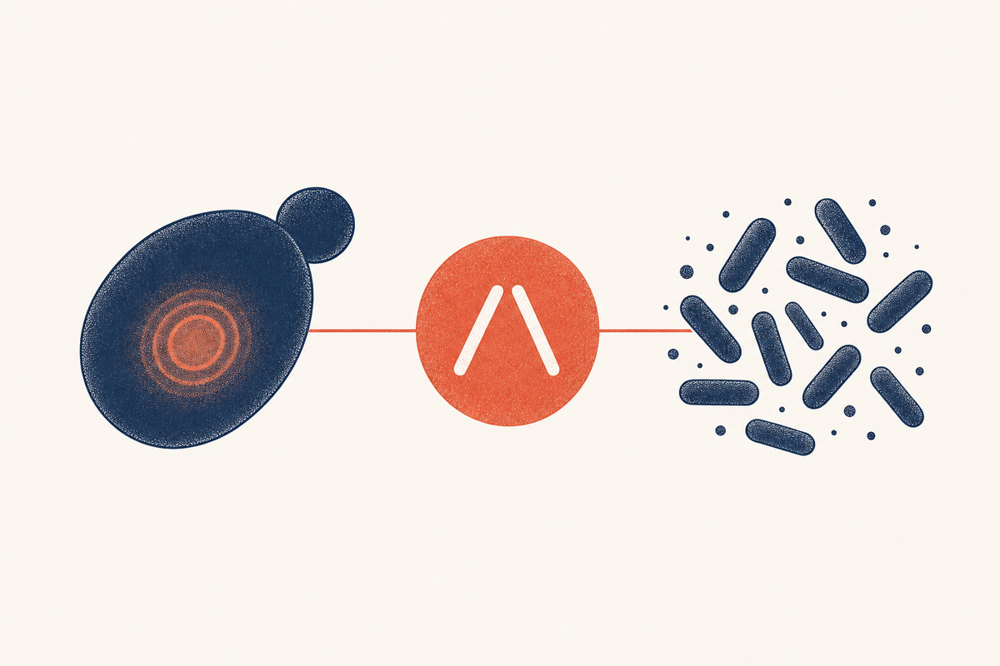

Key Takeaways
- Yeast infection is fungal (Candida); BV is a bacterial imbalance. They need completely different medicines, so the distinction matters.[1]
- Itching is the hallmark of yeast; a fishy odor is the hallmark of BV.[1]
- Vaginal pH is the fastest objective clue: below 4.5 points to yeast, above 4.5 points to BV (or trichomoniasis).[1]
- Yeast discharge is thick, white, and clumpy with no odor; BV discharge is thin and gray-white with a fishy smell.[1]
- Yeast is treated with antifungals (fluconazole, clotrimazole, miconazole); BV is treated with antibiotics (metronidazole or clindamycin).[1]
- Self-diagnosis is unreliable: most women who assume a yeast infection actually have BV or another condition.[4]

If your symptoms are discharge, itching, or a change in smell, the practical question is almost always the same: is this a yeast infection or bacterial vaginosis? The two are the most common causes of vaginal discharge in reproductive-age women, they can feel alike, and yet they are fundamentally different problems that require different treatment. Using an antifungal on BV, or an antibiotic on a yeast infection, is usually a waste of money and days of discomfort at best. Both are extremely common: roughly 75 percent of women will have a yeast infection at least once, and up to 9 percent develop the recurrent form, which alone affects about 138 million women worldwide each year.[6][7] A 2026 state-of-the-art review and the IDSA guideline both stress that objective testing, especially vaginal pH and microscopy, is essential because the treatments cannot be swapped.[2][9]
Why the Difference Matters
A yeast infection is an overgrowth of a fungus, Candida, while bacterial vaginosis is a shift in the normal bacterial community, in which protective lactobacilli drop and anaerobic bacteria take over.[1] The distinction is not academic:
- Treatment differs entirely. Antifungal azoles treat yeast; the antibiotics metronidazole or clindamycin treat BV. Neither class works on the other condition.[1]
- The health implications differ. BV, especially when recurrent, is associated with a higher risk of sexually transmitted infections and, in pregnancy, of preterm birth, which is why correct diagnosis matters beyond symptom relief.[1]
- Some people have both. Mixed infections occur, which is one more reason to confirm the diagnosis rather than guess.[1]
Side-by-Side Comparison
| Feature | Yeast infection | Bacterial vaginosis |
|---|---|---|
| Type of problem | Fungal overgrowth (Candida) | Bacterial imbalance |
| Main symptom | Intense itching and burning | Often mild or no discomfort |
| Discharge | Thick, white, clumpy, no odor | Thin, gray-white, fishy odor |
| Vaginal pH | Below 4.5 (normal) | Above 4.5 |
| Microscopy finding | Budding yeast and pseudohyphae | Clue cells (bacteria-coated cells) |
| Classic treatment | Fluconazole or topical azole | Metronidazole or clindamycin |
| Sexually transmitted | No | Not strictly, but associated with sex |
Symptoms Compared
The words itch and smell do most of the work:
- Yeast infection is dominated by itching and burning. The vulva is typically red and swollen, and sex or urination can sting because the skin is inflamed.[1]
- Bacterial vaginosis is dominated by the discharge and its odor. Itching is usually mild or absent, and the discomfort, when present, is often described as a general unwell feeling or mild irritation rather than intense itch.[1]
Discharge and Odor
Discharge is the single most informative clue:
- Yeast: thick, white, and cottage-cheese-like, with no significant odor. The quantity can vary from day to day.[1]
- BV: thin, homogeneous, gray-white, and often more noticeable after intercourse, with a characteristic fishy odor that is typically most obvious after sex or after adding a drop of potassium hydroxide during an exam (the whiff test).[1]
A frothy, yellow-green discharge points in a third direction, trichomoniasis, a sexually transmitted parasite.[1]
The pH Test
The vaginal pH is the fastest objective way to separate the two. It is measured with a simple paper strip during a clinical exam:
- Yeast infection: pH stays in the normal acidic range, below 4.5, because lactobacilli are still producing acid.[1]
- BV: pH rises above 4.5 as the protective acid-producing bacteria decline.[1]
How Each Is Diagnosed
For both conditions, diagnosis combines the symptom pattern, the pH, and what the clinician sees under the microscope.[5]
- Yeast is confirmed by seeing budding yeast and pseudohyphae on a potassium hydroxide prep of the discharge, with a normal pH.[1]
- BV is diagnosed using clinical criteria (Amsel) or the Nugent scoring of a Gram-stained slide, in which clue cells, a fishy odor, thin discharge, and an elevated pH support the diagnosis.[1]
Culture or molecular (DNA) testing can clarify tricky or recurrent cases and is increasingly used in clinics.[1]
How Each Is Treated
Yeast infection is treated with an azole antifungal: a single 150 mg oral dose of fluconazole, or a topical course of clotrimazole, miconazole, or terconazole.[1] See the yeast infection guide for full dosing.
Bacterial vaginosis is treated with an antibiotic: metronidazole (oral or vaginal gel) or clindamycin (cream or oral).[1] BV management, including the higher recurrence rate and the role of extended or suppressive regimens, is covered in the bacterial vaginosis guide.
Both are usually short, well-tolerated courses, but neither works on the other condition, which is the entire reason diagnosis comes first.
Treatment at a Glance
| Condition | Drug class | Examples | Availability | Typical course |
|---|---|---|---|---|
| Yeast infection | Azole antifungal | Fluconazole, clotrimazole, miconazole | Rx (oral) or OTC (topical) | Single dose or 1 to 7 days[1] |
| Bacterial vaginosis | Antibiotic | Metronidazole, clindamycin | Prescription | 5 to 7 days, sometimes longer[1] |
Why Misdiagnosis Happens
The overlap in symptoms makes guessing unreliable. In a well-known multicenter study, only about 34 percent of women who bought an over-the-counter antifungal for a self-diagnosed yeast infection actually had one; many had BV or a mixed infection, and a large share had no infection at all.[4] An earlier prospective study reached a similar conclusion, finding microscopic confirmation in only about a third of self-diagnosed cases.[5]
The practical takeaway: if you have had a confirmed yeast infection before and recognize the exact same pattern, a short over-the-counter azole is reasonable. If the symptoms are new, unusual, odorous, or keep coming back despite treatment, get a proper diagnosis first.
Self-Testing and When to See a Clinician
Home pH kits can help, because a pH above 4.5 argues against yeast and toward BV or trichomoniasis, but they cannot confirm a diagnosis on their own. A clinical exam with pH testing and microscopy remains the reference standard for sorting these out.[1]
See a clinician if this is your first episode of these symptoms, if there is a strong odor, pelvic pain, fever, or bleeding between periods, if you are pregnant, or if symptoms persist after treatment. Recurrent symptoms warrant testing for the underlying conditions that drive recurrence, such as diabetes for yeast or, for BV, the factors that allow the bacterial imbalance to return.[8]
For deeper dives on each side of the differential, see the vaginal yeast infection guide and the bacterial vaginosis guide, and for the postmenopausal causes of burning that are often confused with infection, the vaginal dryness treatment guide.
Self-Testing vs a Clinical Exam
| Approach | What it tells you | Limits |
|---|---|---|
| Home pH strip | pH above 4.5 argues against yeast, toward BV or trich[1] | Cannot confirm the diagnosis on its own |
| Over-the-counter antifungal trial | Reasonable only when the same, previously confirmed symptoms recur[4] | Wasted and delayed if the real cause is BV or another condition |
| Clinician exam (pH + microscopy + culture) | Confirms species and rules out other causes | Requires a visit; reference standard for tricky or recurrent cases[5] |
Red Flags
- Fever, lower abdominal or pelvic pain, or bleeding between periods
- A strong, worsening odor or green, frothy discharge
- Symptoms in pregnancy
- Symptoms that do not improve after a full course of the correct treatment
- Frequent recurrence despite appropriate therapy
Any of these warrants prompt clinical evaluation rather than another round of self-treatment, because they can signal pelvic inflammatory disease, a sexually transmitted infection, or another diagnosis that needs targeted care.[1]
Frequently Asked Questions
Look at the symptoms and, ideally, the pH. Intense itching and burning with thick, white, odorless discharge point to yeast (pH below 4.5). A thin, gray-white discharge with a fishy odor points to BV (pH above 4.5). Confirmation by a clinician with pH testing and microscopy is the most reliable approach.[1]
Yes. BV classically causes a fishy odor, often more noticeable after sex or during the exam, while a yeast infection produces discharge with little or no odor. This difference is one of the most useful clues.[1]
Yeast infection discharge is thick, white, and clumpy, like cottage cheese, with no odor. BV discharge is thin, gray-white, and homogeneous, often with a fishy smell.[1]
No. Yeast is fungal and needs an antifungal (such as fluconazole or a topical azole), while BV is bacterial and needs an antibiotic (metronidazole or clindamycin). Using one on the other does not work and can delay the correct treatment.[1]
Yes, mixed infections occur. This is one of the reasons confirming the diagnosis with testing is valuable, because symptoms can be mixed and the correct approach may need to address both.[1]
A vaginal pH below 4.5 favors yeast infection, while a pH above 4.5 favors BV or trichomoniasis. It is a fast, objective clue but not a complete diagnosis on its own.[1]
Both cause abnormal discharge and discomfort, and the differences can be subtle, especially without pH testing or microscopy. Studies show self-diagnosis is wrong in the majority of cases, with most misdiagnosers assuming yeast when they actually have BV or no infection.[4]
BV is not classified as a sexually transmitted infection, but it is associated with sexual activity, including new or multiple partners, and it raises the risk of acquiring STIs. Yeast infection is not sexually transmitted at all.[1]
See a clinician for a first episode, a strong odor, pelvic pain, fever, bleeding between periods, symptoms in pregnancy, or symptoms that persist after treatment. These can indicate BV, trichomoniasis, pelvic inflammatory disease, or another condition needing specific care.[1]
References
- Workowski KA, Bachmann LH, Chan PA, et al. Sexually Transmitted Infections Treatment Guidelines, 2021. MMWR Recomm Rep. 2021;70(4):1-187. doi:10.15585/mmwr.rr7004a1
- Pappas PG, Kauffman CA, Andes DR, et al. Clinical Practice Guideline for the Management of Candidiasis: 2016 Update by the Infectious Diseases Society of America. Clin Infect Dis. 2016;62(4):e1-e50. doi:10.1093/cid/civ933
- Gonçalves B, Ferreira C, Alves CT, Henriques M, et al. Vulvovaginal candidiasis: Epidemiology, microbiology and risk factors. Crit Rev Microbiol. 2016;42(6):905-927. doi:10.3109/1040841X.2015.1091805
- Ferris DG, Nyirjesy P, Sobel JD, et al. Over-the-counter antifungal drug misuse associated with patient-diagnosed vulvovaginal candidiasis. Obstet Gynecol. 2002;99(3):419-425. doi:10.1016/s0029-7844(01)01759-8
- Abbott J. Clinical and microscopic diagnosis of vaginal yeast infection: a prospective analysis. Ann Emerg Med. 1995;25(5):587-591. doi:10.1016/s0196-0644(95)70168-0
- Denning DW, Kneale M, Sobel JD, Rautemaa-Richardson R. Global burden of recurrent vulvovaginal candidiasis: a systematic review. Lancet Infect Dis. 2018;18(10):e339-e347. doi:10.1016/S1473-3099(18)30103-8
- Foxman B, Muraglia R, Dietz JP, Sobel JD. Prevalence of recurrent vulvovaginal candidiasis in 5 European countries and the United States: results from the first global systematic survey. J Low Genit Tract Dis. 2013;17(1):45-52. doi:10.1097/LGT.0b013e318273e8cf
- Patel DA, Gillespie B, Sobel JD, et al. Risk factors for recurrent vulvovaginal candidiasis in women receiving maintenance antifungal therapy. Am J Obstet Gynecol. 2004;190(3):644-653. doi:10.1016/j.ajog.2003.11.027
- Rautemaa-Richardson R, Sobel JD, Stone N, et al. State-of-the-Art Review: Managing Vulvovaginal Candidiasis. Clin Infect Dis. 2026. doi:10.1093/cid/ciaf673